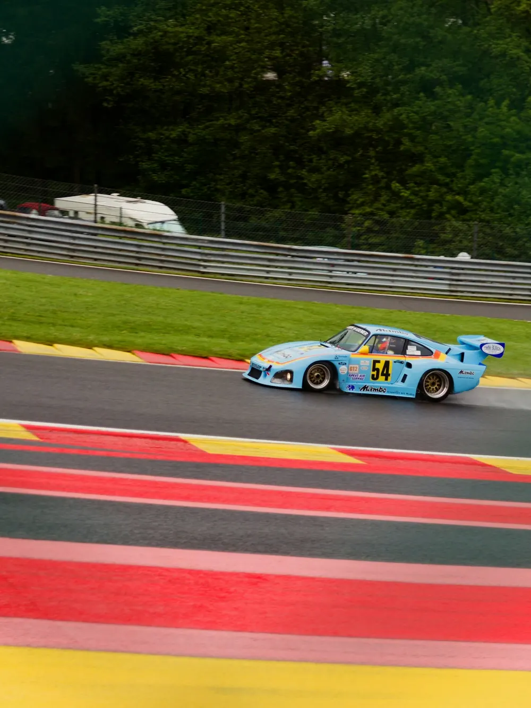

Juntos, desenhando o futuro
Soluções financeiras integradas com excelência, transparência e visão de longo prazo para preservação e crescimento patrimonial.
Uma história de excelência
Conheça nossa evolução no decorrer do tempo — de uma das maiores corretoras independentes do país ao grupo financeiro integrado que somos hoje.
Com uma veia empreendedora e raízes sólidas desde 1989
O Criteria Financial Group foi fundado buscando aprimorar o serviço de rentabilização e preservação de patrimônio. Expandindo além de Investimentos, a Criteria oferece serviços de Crédito, Seguros, Câmbio e Fusões & Aquisições.
Com uma equipe multidisciplinar, trazemos soluções criativas e sofisticadas para nossos clientes no universo individual, familiar e corporativo. Temos enraizada na nossa essência a importância de construir relacionamentos de longo prazo que passam de geração em geração.
Conheça nossa evolução no decorrer do tempo
Atuação 360° em todo o mercado
Cinco frentes integradas, um único relacionamento. Conheça cada vertical.

O valor da assessoria profissional
Diferenciais que nos tornam únicos
35 anos de história, um grupo financeiro integrado e a mentalidade global de quem está presente onde o cliente precisa.
- 01Líderes NacionaisCom 35 anos de história nos consolidamos entre as 10 maiores assessorias financeiras do país.
- 02Grupo Financeiro IntegradoSoluções 360° incorporando os três pilares da jornada financeira: Banking, Investimentos e Seguros.
- 03Escala Global, Presença LocalMentalidade global para alocação e diversificação, estando presente em mais de 8 estados do Brasil.
- 04Partnership SólidoTime de executivos alinhados no longo prazo e com foco no sucesso dos clientes.
- 05GovernançaEstrutura robusta, garantindo as melhores práticas em gestão e atendimento aos clientes.
- 06Expertise SêniorParceria com clientes impulsionada por soluções personalizadas e expertise sênior de 72 Financial Advisors.
Estruturas de atendimento
Nosso modelo coloca o cliente no centro de uma estrutura integrada, conectando seis frentes em uma experiência unificada. "Acesso global, serviço local."
Abordagem empreendedora para fornecer consultoria imparcial com uma oferta holística de produtos, unindo Banking, Investimentos e Seguros em um único relacionamento.
Um banker responsável pela sua relação com o grupo inteiro, com autonomia para acionar cada especialista no momento certo.
Ampla gama de soluções personalizadas em investimentos, gestão de patrimônio e crédito, com mentalidade global para alocação e diversificação.
Diversificação e descorrelação de forma estrutural fomentam a proteção e a mitigação de riscos ao longo dos ciclos.
Foco na longevidade patrimonial, com olhar atento para as futuras gerações: organização do patrimônio de forma global e independente.
Otimização fiscal, tributária e sucessória são pilares da perpetuação do patrimônio no longo prazo.
Parceria com clientes impulsionada por soluções personalizadas e expertise sênior, alinhando estratégias e serviços financeiros aos seus objetivos de vida.
Aposentadoria, educação, orçamento e impostos tratados dentro de um único plano, revisado ao longo do tempo.
Acesso a especialistas dedicados em cada classe de ativo e produto financeiro: renda fixa, renda variável, fundos, seguros, câmbio e offshore.
Quem opera o produto participa da conversa, sem intermediários entre a sua necessidade e a solução.
Soluções de crédito estruturado e assessoria em fusões e aquisições, estruturação de capital e operações de M&A para pessoas e empresas.
Mais de R$ 450 milhões em operações de crédito e um time de Investment Banking dentro do próprio grupo.
Encontre a solução ideal para o seu perfil
Uma estrutura robusta de conformidade e gestão de riscos é um pré-requisito para o crescimento sustentável
Reconhecidos pelo mercado, guiados por valores
Não somos guiados por prêmios, mas acreditamos que eles refletem um trabalho diligente e profissional.
- G20 XP
- Selo Escritório Private
- Selo Escritório PJ
- Selo Governança e Integridade
- TOP Tier · Renda Variável
- TOP International Offshore
- XPEED · Education
- Insurance Experience
- Porto Seguro · Consórcio Elite
- Destaque Bradesco Seguros
- MetLife · Get It
- Leaders League 2024 · Highly Recommended, Lower-Mid Cap M&A
- Brazil Awards · Crédito
- Brazil Awards · Produtos Estruturados
- Brazil Awards · Fundos Imobiliários
Presença local, mentalidade global
A Criteria na imprensa
Pronto para desenhar o seu futuro financeiro?
Fale com nossos especialistas e descubra como podemos ajudar.
Fale Conosco